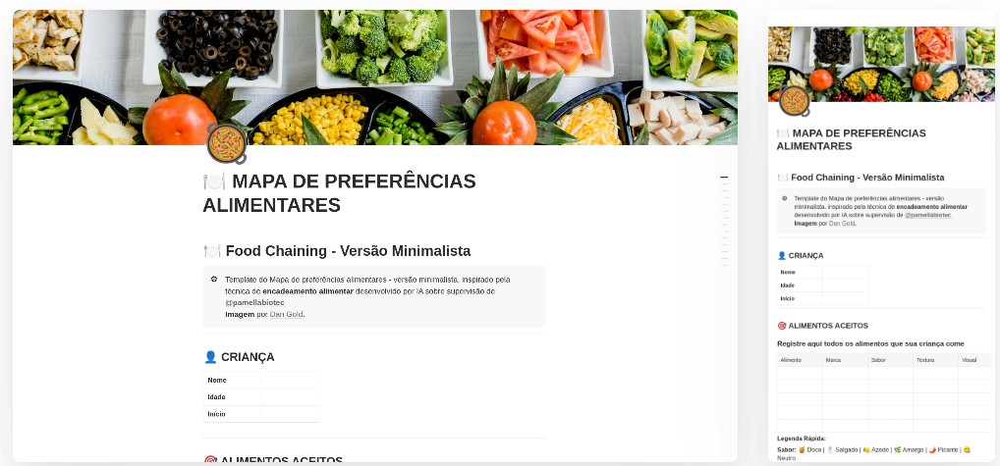

Template Notion: Mapa de Preferências Alimentares - Versão Minimalista
Um instrumento prático de escuta e organização para transformar batalhas à mesa em conversas gentis, focado em pessoas neurodivergentes.
R$ 15,00 · pagamento único, acesso vitalício

Ficha do recurso
- Tipo
- RED: recurso educacional digital
- Acesso
- Pago, com compra pela plataforma indicada
- Público
- Mães e Cuidadores, Pessoas neurodivergentes, Profissionais da Educação Especial, Profissionais de saúde
- Licença
- Uso pessoal; reprodução e revenda proibidas
Sobre o produto
O Mapa de Preferências Alimentares é um template minimalista construído no Notion, inspirado na técnica de encadeamento alimentar. Ele atua como um banco de dados vivo para registrar, mapear e acompanhar alimentos favoritos, aceitos ou evitados, auxilia no acompanhamento profissional de nutricionista, médico, pediatra, neuropediatra, fonoaudiologa, terapeuta ocupacional, psicopedagoga, atendimento educacional especializado (AEE) e outros.
Mais do que uma planilha, este é um instrumento de escuta e organização. O template foi desenhado para ajudar a transformar as dolorosas “batalhas à mesa” em conversas mais gentis, previsíveis e profundamente alinhadas às necessidades singulares de cada pessoa neurodivergente e de quem cuida.
O design conta com tags de contexto e apoio (como texturas, temperaturas e gatilhos sensoriais) e, de forma inédita, integra um espaço de cuidado voltado à mãe/cuidador, reconhecendo que o bem-estar de quem oferta o alimento é essencial para a harmonia das refeições.
Para quem é
- Mães, pais e cuidadores: Que lidam com seletividade alimentar severa, TARE (Transtorno Alimentar Restritivo Evitativo) ou desafios de integração sensorial na rotina de filhos autistas ou TDAHs, e precisam de previsibilidade.
- Pessoas neurodivergentes (Jovens e Adultos): Que buscam mais autonomia e autoconhecimento mapeando suas próprias regulações sensoriais e alimentares de forma estruturada.
- Terapeutas Ocupacionais, Fonoaudiólogos e Nutricionistas: Que desejam indicar uma ferramenta tecnológica de acompanhamento diário para as famílias entre uma sessão e outra.
Como funciona a entrega
O pagamento é processado de forma 100% segura pelo Marketspace da Hotmart.
Logo após a confirmação da sua compra, você receberá o acesso pelo e-mail cadastrado. Dentro da plataforma, você encontrará o link oficial do modelo e um guia rápido. Basta clicar no link e selecionar a opção "Duplicar" no canto superior da tela para transferir o mapa para o seu espaço de trabalho no Notion. O acesso é imediato e vitalício.
Perguntas frequentes
Preciso pagar pelo Notion para usar?
Não. O template funciona perfeitamente na versão gratuita do Notion. Basta ter uma conta criada para duplicá-lo.
Como recebo o acesso ao material?
Assim que o pagamento for aprovado pela Hotmart, você receberá um e-mail com as instruções e o link exclusivo para duplicar o template para a sua conta.
Posso personalizar as categorias?
Sim! O Notion é 100% editável. Você pode adicionar novas tags, alterar cores e adaptar o banco de dados conforme a necessidade da sua família.
Informações da compra
O que você recebe
- Template Notion completo (versão minimalista)
- Banco de dados pré-configurado de alimentos favoritos e evitados
- Sistema de tags sensoriais, de contexto e apoio
- Espaço exclusivo para o cuidado da mãe/cuidador
Preço e pagamento
R$ 15,00
pagamento único, acesso vitalício
O pagamento é feito na plataforma de venda, indicada no botão de compra.
Direito de arrependimento
Você pode desistir desta compra em até 7 dias corridos, a contar do recebimento, conforme o art. 49 do Código de Defesa do Consumidor.
Garantia: Reembolso integral em até 7 dias, direto pela plataforma.
Fornecedor
Bio+Tech EduDesign
Atendimento: pamellabiotec@gmail.com
Quem responde pela oferta
Fornecedor
Bio+Tech EduDesign
Atendimento: pamellabiotec@gmail.com